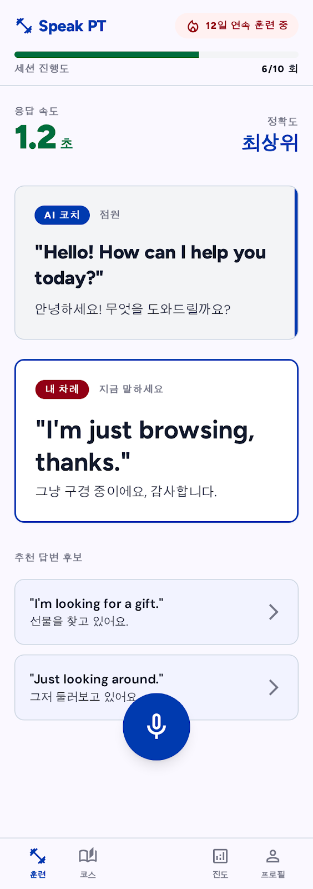
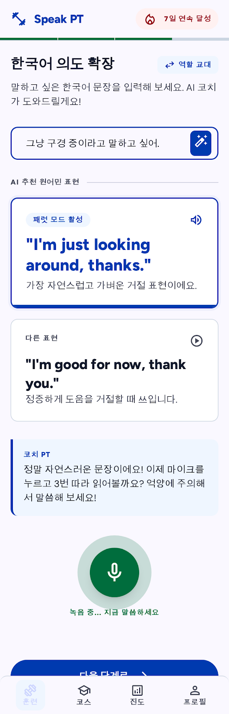
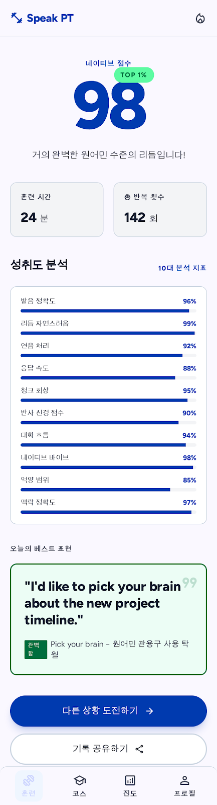

익숙했던 영어 공부
보고, 외우고,
정답을 고릅니다.
- 긴 문법 설명
- 눈으로 푸는 문제
- 콘텐츠 진도율
AI LANGUAGE TRAINING
실제 대화처럼 듣고, 직접 말하고, 코칭받고, 다시 시도하세요. Speak PT가 영어 반응 근육을 만듭니다.

WHY SPEAK PT
단어도 알고 문법도 아는데, 대화가 시작되면 입이 멈추나요? 더 공부하는 대신 필요한 문장을 입에서 바로 나올 때까지 훈련해야 합니다.
“Speaking is muscle.”
익숙했던 영어 공부
Speak PT의 영어 훈련
TRAINING LOOP
설명은 짧게, 말하기는 더 많이. 힌트를 줄여가며 실제 반응으로 연결합니다.
문장 전체를 보며 소리, 연결, 리듬을 그대로 따라 합니다.
눈으로 읽는 영어에서 입으로 기억하는 영어로 바꿉니다.
텍스트 없이 AI의 말에 자연스러운 속도로 응답합니다.

SPEAK YOUR INTENTION
한국어로 의도를 입력하면 실제 대화에서 자연스러운 영어 표현을 제안합니다. 뜻만 확인하고 끝내지 않고, 바로 듣고 말하며 내 문장으로 만듭니다.
“그냥 구경 중이라고 말하고 싶어.”
Speak PT 추천 표현 “I'm just looking around, thanks.”NATIVE VIBE COACHING
발음, 말의 흐름, 영어 리듬을 실제 음성으로 확인합니다. 가장 먼저 고칠 한 가지를 짧게 코칭해 다음 시도를 더 자연스럽게 만듭니다.
단어를 얼마나 또렷하게 전달했는지
문장을 자연스럽게 이어 말했는지
강세와 억양이 살아 있는지

REAL-LIFE SCENARIOS
시험용 문장이 아니라, 오늘 밖에서 바로 쓸 수 있는 대화를 훈련합니다.
SHOPPING
CAFE
TRAVEL
WORK
HEALTH
AND MORE
YOUR FIRST SPEAKING SET
오늘 첫 번째 영어 말하기 세트를 시작하세요.
무료로 말하기 시작하기 현재 공개 베타 운영 중 · Chrome 및 Edge 권장